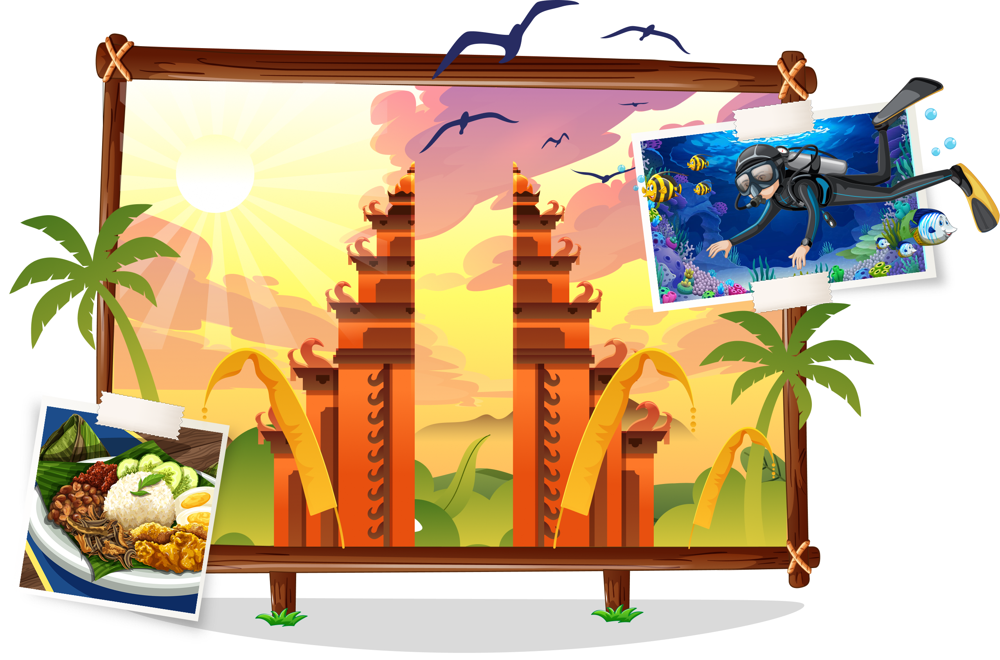
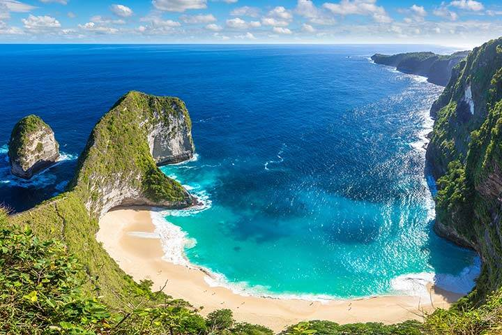
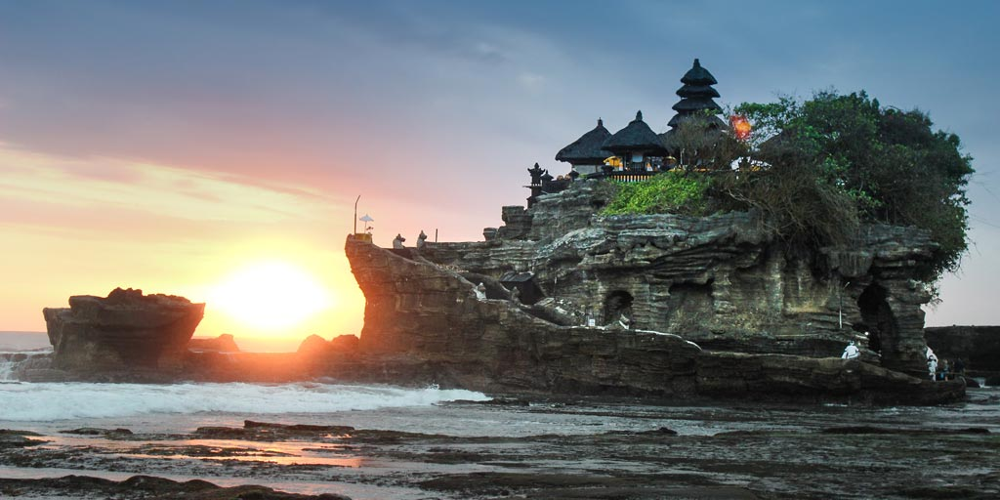
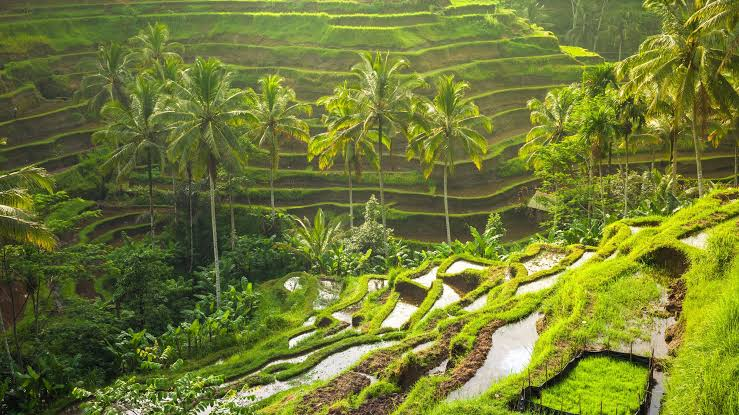
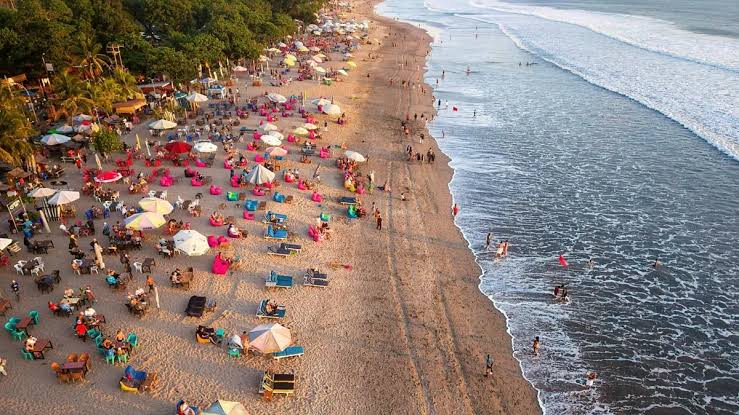
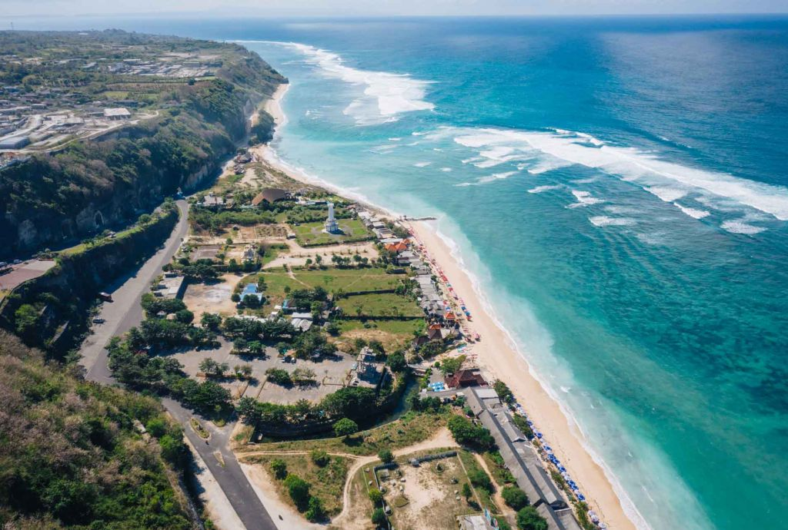

Tabanan
Tanah Lot
Pura di atas batu karang dengan sunset ikonik di pesisir Tabanan.
Temukan lebih dari 700 destinasi wisata impian dan susun rute perjalanan terbaikmu secara efisien bersama Langkah Baswara.
Langkah Baswara hadir sebagai sistem informasi geografis (Web-GIS) interaktif yang dirancang untuk membantu kamu merencanakan liburan. Dengan dukungan visualisasi peta interaktif, analisis radius lokasi, hingga sistem rekomandasi dan optimasi rute pintar, kamu bisa menikmati perjalanan liburan yang lebih efektif, hemat waktu, dan sesuai preferensi kamu.

Pilih destinasi wisata impianmu dari berbagai kategori seperti budaya, alam, bahari, dan rekreasi yang tersedia di Bali.
Manfaatkan fitur filter kabupaten dan kategori serta buat rute perjalanan terbaik agar liburanmu lebih terarah dan efisien.
Lihat informasi lengkap lokasi, jam operasional, tiket masuk, hingga navigasi langsung ke lokasi tujuanmu.

Pura megah di tebing tinggi menghadap samudra dengan panorama matahari terbenam dan pertunjukan tari Kecak magis.

Ikon pura megah di atas bongkahan batu karang laut dengan panorama matahari terbenam yang memukau.

Hamparan sawah berundak hijau asri dengan sistem pengairan Subak tradisional yang menyejukkan di kawasan Ubud.

Pantai pasir putih legendaris dengan ombak bersahabat untuk peselancar pemula dan pusat keramaian pulau Bali.

Pura terapung anggun di tepi Danau Beratan dengan latar perbukitan Bedugul yang sejuk dan berkabut damai.

Pantai pasir putih tersembunyi di balik tebing kapur megah berhias pahatan patung lima ksatria Panca Pandawa.
Langkah Baswara adalah aplikasi Sistem Informasi Geografis pariwisata di Pulau Bali yang membantu wisatawan menemukan berbagai destinasi wisata di Bali.
Sistem kami memadukan data titik koordinat geospasial dengan algoritma rute terpadu untuk memberikan estimasi durasi dan jalur perjalanan paling efisien antar destinasi pilihan Anda.
Tentu! Anda dapat memfilter destinasi berdasarkan kategori Budaya, Alam, Rekreasi, serta memilih 9 Kabupaten/Kota di Bali langsung pada peta interaktif.
Ya, seluruh fitur eksplorasi peta, pencarian destinasi, filter kategori, hingga panduan wisata di Langkah Baswara dapat diakses 100% gratis oleh seluruh wisatawan.
Langkah Baswara merupakan platform digital geospasial yang dirancang untuk mempermudah wisatawan, peneliti, dan masyarakat dalam mengakses informasi lokasi wisata di Bali secara spasial, terpadu, dan terverifikasi.
Dilengkapi dengan 730 titik koordinat wisata dari 9 Kabupaten/Kota di Bali, platform ini mengintegrasikan navigasi peta satelit, batas wilayah, dan kategori destinasi (Wisata Alam, Budaya, Rekreasi, dan Umum).
Eksplorasi koordinat pura budaya, tebing pantai eksotis, terasering alam, hingga ruang edukasi di seluruh kabupaten Bali.
Area AKTIF: Seluruh Bali (9 Kabupaten) • 147 Titik Destinasi
Daftar koordinat wisata favorit berdasarkan posisi viewport peta saat ini...
Pura di atas batu karang dengan sunset ikonik di pesisir Tabanan.
Pura luhur di tebing karang selatan dengan pemandangan Samudra Hindia.
Lanskap sawah berundak klasik Ubud dengan jalur foto dan jalan setapak.
Pantai timur yang tenang, cocok untuk sunrise, sepeda, dan keluarga.
Kelola preferensi akun, simpan destinasi favorit yang telah Anda tandai (pin) dari peta, dan susun rute perjalanan wisata Anda untuk petualangan berikutnya di Pulau Dewata.